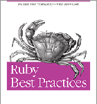

- Mejores prácticas
- Cuanto mejor sea tu Ruby mejor será también tu Rails.

- Encuentros
- Katas, Dojos, desafíos, Concursos, afila tus habilidades mientras te diviertes con tu
Comunidad
- Libros avanzados
- Hay muchos libros que cubren aspectos específicos del desarrollo con Ruby on Rails, pero
algunos de los más reconocidos que cubren el conjunto de la plataforma son:

- ...